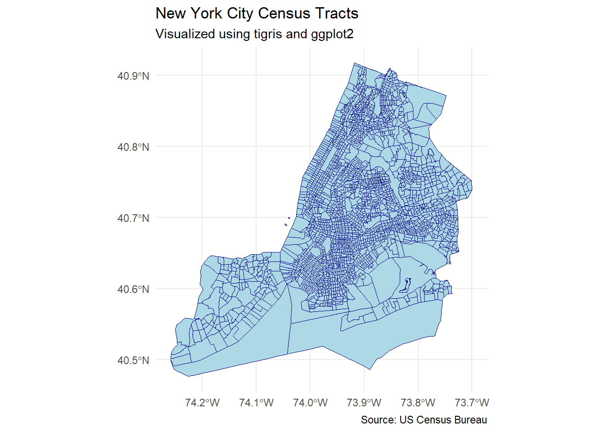
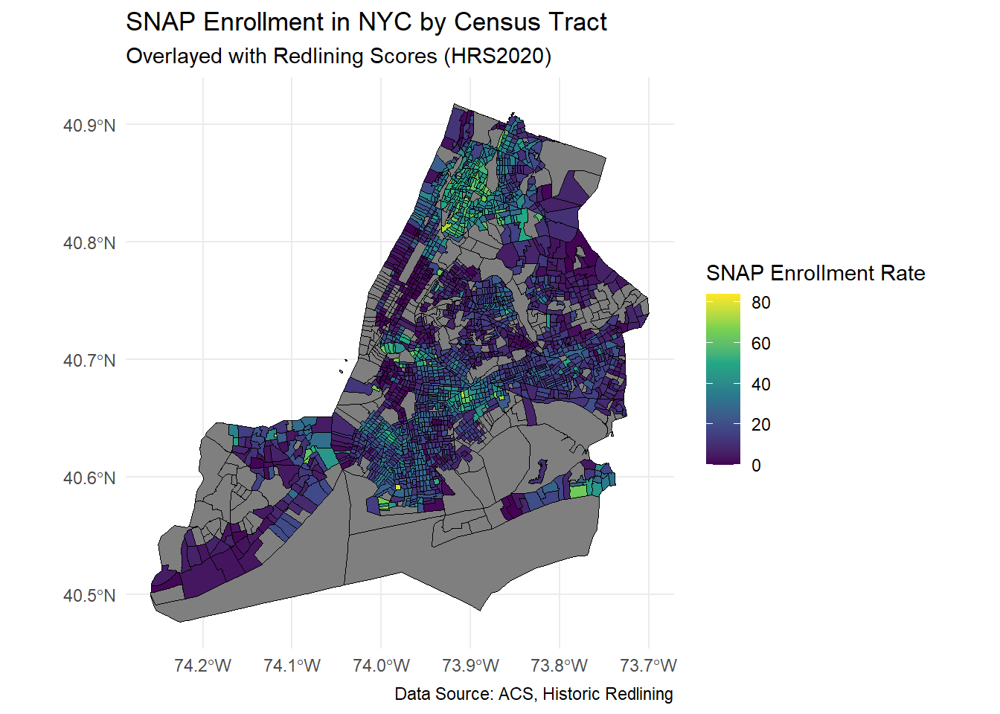
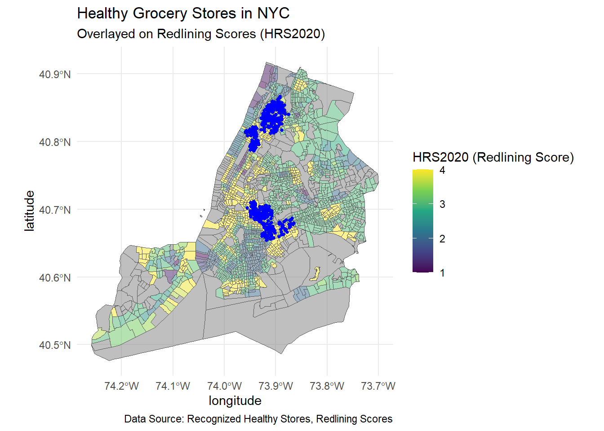
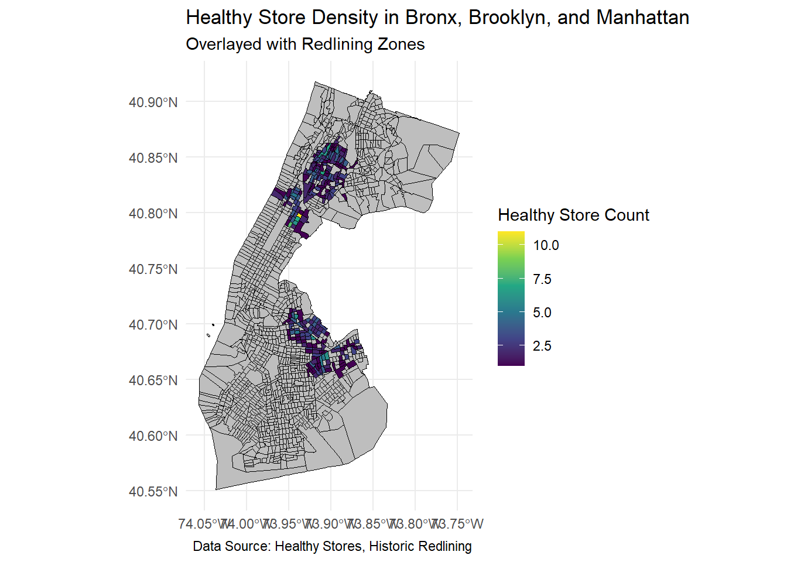
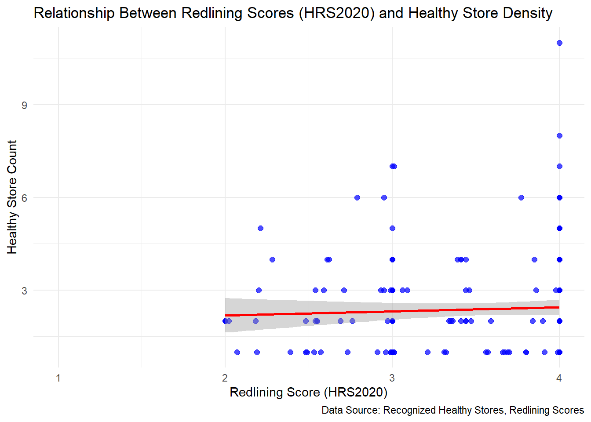

#DATA CLEANING
library(tidyverse)## ── Attaching core tidyverse packages ──────────────────────── tidyverse 2.0.0 ──
## ✔ dplyr 1.1.4 ✔ readr 2.1.5
## ✔ forcats 1.0.0 ✔ stringr 1.5.1
## ✔ ggplot2 3.5.1 ✔ tibble 3.2.1
## ✔ lubridate 1.9.3 ✔ tidyr 1.3.1
## ✔ purrr 1.0.2
## ── Conflicts ────────────────────────────────────────── tidyverse_conflicts() ──
## ✖ dplyr::filter() masks stats::filter()
## ✖ dplyr::lag() masks stats::lag()
## ℹ Use the conflicted package (<http://conflicted.r-lib.org/>) to force all conflicts to become errorslibrary(readxl)SNAP =
read_csv(file = "./Datasets/ACS_SNAP_ENROLLMENT.csv")|>
janitor::clean_names()|>
select(
geo_id:s2201_c01_001e,
s2201_c02_009e,
s2201_c02_015e,
s2201_c02_021e:s2201_c02_032e,
s2201_c02_036e:s2201_c02_038e,
s2201_c04_001e)|>
select(-ends_with("m"))|>
slice(-1)|>
mutate(geoid = str_remove(geo_id, ".*US"))|>
rename(
total_ct_households = s2201_c01_001e,
ph_with_children = s2201_c02_009e,
ph_no_children = s2201_c02_015e,
ph_below_poverty = s2201_c02_021e,
ph_above_poverty = s2201_c02_022e,
ph_disability = s2201_c02_023e,
ph_no_disability = s2201_c02_024e,
ph_white = s2201_c02_025e,
ph_black = s2201_c02_026e,
ph_aian = s2201_c02_027e,
ph_asian = s2201_c02_028e,
ph_nhopi = s2201_c02_029e,
ph_some_other_race = s2201_c02_030e,
ph_two_race = s2201_c02_031e,
ph_hispanic = s2201_c02_032e,
ph_no_work = s2201_c02_036e,
ph_1_work = s2201_c02_037e,
ph_2_work = s2201_c02_038e,
ph_snap = s2201_c04_001e
)|>
mutate(across(total_ct_households:ph_snap, as.numeric))|>
select(geoid,name,ph_snap,everything())|>
select(-geo_id)## Rows: 2330 Columns: 458
## ── Column specification ────────────────────────────────────────────────────────
## Delimiter: ","
## chr (458): "GEO_ID", NAME, S2201_C01_001E, S2201_C01_001M, S2201_C01_002E, ...
##
## ℹ Use `spec()` to retrieve the full column specification for this data.
## ℹ Specify the column types or set `show_col_types = FALSE` to quiet this message.## Warning: There were 19 warnings in `mutate()`.
## The first warning was:
## ℹ In argument: `across(total_ct_households:ph_snap, as.numeric)`.
## Caused by warning:
## ! NAs introduced by coercion
## ℹ Run `dplyr::last_dplyr_warnings()` to see the 18 remaining warnings.abbreviations for column_names:
ct = count ph = percentage of households
redlining =
read_excel("./Datasets/Historic Redlining Score 2020B.xlsx")|>
janitor::clean_names()|>
mutate(fip = substr(geoid20, 1, 5))|>
filter(fip %in% c("36005", "36047", "36061", "36081", "36085"))|>
rename(geoid = geoid20)matching the historic redlining score with snap enrollment data
redlining_snap =
redlining|>
left_join(SNAP, by = "geoid")|>
filter(is.na(ph_snap)==FALSE)We obtained the geoid for the census tracts based on the fip code of NYC, boroughs and specific census tract codes.
nyc_healthy_store =
read_csv("./Datasets/Recognized_Shop_Healthy_Stores.csv")|>
janitor::clean_names()|>
distinct(bin, .keep_all = TRUE)|>
mutate(fipcode = case_when(
borough == "Bronx" ~ "36005",
borough == "Brooklyn" ~ "36047",
borough == "New York" ~ "36061"
),
ct_label = case_when(
census_tract_2020 < 100 ~ paste0("00", census_tract_2020, "00"),
census_tract_2020 < 1000 ~ paste0("0", census_tract_2020, "00"),
census_tract_2020 < 1200 ~ paste0(census_tract_2020, "00"),
census_tract_2020 < 10000 ~ paste0("00", census_tract_2020),
census_tract_2020 < 100000 ~ paste0("0", census_tract_2020)
))|>
select(store_name,borough,zip_code,latitude,longitude,fipcode, ct_label)|>
filter(!is.na(ct_label))|>
mutate(geoid = paste(fipcode, ct_label, sep = ""))|>
select(-fipcode, -ct_label)## Rows: 675 Columns: 15
## ── Column specification ────────────────────────────────────────────────────────
## Delimiter: ","
## chr (4): Store Name, Street Address, Borough, Neighborhood Tabulation Area ...
## dbl (10): Zip
## Code, Year Awarded, Program
## Wave, Latitude, Longitude, Com...
## lgl (1): Address
##
## ℹ Use `spec()` to retrieve the full column specification for this data.
## ℹ Specify the column types or set `show_col_types = FALSE` to quiet this message.We obtain the count for the number of healthy food stores in the census tracts and matched that with the snap enrollment data for New York City, Bronx and Brooklyn Borough.
please note that healthy store count is only available in three boroughs so make sure you filter before the match
health_store_count =
nyc_healthy_store|>
group_by(geoid)|>
summarise(count_healthy_stores=n())
redlining_snap|>
filter(str_starts(geoid, "36005") | str_starts(geoid, "36047")| str_starts(geoid, "36061"))|>
left_join(health_store_count,by="geoid")## # A tibble: 1,321 × 27
## geoid cbsa metro_name hrs2020 interval2020 fip name ph_snap
## <chr> <dbl> <chr> <dbl> <dbl> <chr> <chr> <dbl>
## 1 36061008603 35620 New York-Newark-J… 1 1 36061 Cens… 0
## 2 36061010200 35620 New York-Newark-J… 1 1 36061 Cens… 3.1
## 3 36061010601 35620 New York-Newark-J… 1 1 36061 Cens… 0
## 4 36061011401 35620 New York-Newark-J… 1 1 36061 Cens… 1.2
## 5 36061011402 35620 New York-Newark-J… 1 1 36061 Cens… 0.8
## 6 36061012000 35620 New York-Newark-J… 1 1 36061 Cens… 0.8
## 7 36061012200 35620 New York-Newark-J… 1 1 36061 Cens… 0
## 8 36061012800 35620 New York-Newark-J… 1 1 36061 Cens… 0
## 9 36061013000 35620 New York-Newark-J… 1 1 36061 Cens… 1.1
## 10 36061014200 35620 New York-Newark-J… 1 1 36061 Cens… 0
## # ℹ 1,311 more rows
## # ℹ 19 more variables: total_ct_households <dbl>, ph_with_children <dbl>,
## # ph_no_children <dbl>, ph_below_poverty <dbl>, ph_above_poverty <dbl>,
## # ph_disability <dbl>, ph_no_disability <dbl>, ph_white <dbl>,
## # ph_black <dbl>, ph_aian <dbl>, ph_asian <dbl>, ph_nhopi <dbl>,
## # ph_some_other_race <dbl>, ph_two_race <dbl>, ph_hispanic <dbl>,
## # ph_no_work <dbl>, ph_1_work <dbl>, ph_2_work <dbl>, …place_crude =
read_csv("./Datasets/PLACES.csv")|>
janitor::clean_names()|>
rename(geoid = location_id)|>
select(geoid, measure:data_value, measure_id)## Rows: 73621 Columns: 25
## ── Column specification ────────────────────────────────────────────────────────
## Delimiter: ","
## chr (13): StateAbbr, StateDesc, CountyName, DataSource, Category, Measure, D...
## dbl (10): Year, CountyFIPS, LocationName, Data_Value, Low_Confidence_Limit, ...
## lgl (2): Data_Value_Footnote_Symbol, Data_Value_Footnote
##
## ℹ Use `spec()` to retrieve the full column specification for this data.
## ℹ Specify the column types or set `show_col_types = FALSE` to quiet this message.place_cleaned=
place_crude|>
filter(measure_id %in% c("CANCER","DIABETES", "HIGHCHOL", "OBESITY"))|>
pivot_wider(
id_cols = geoid,
names_from = measure_id,
values_from = data_value
)code book for place measures
place_crude|>
distinct(measure, data_value_unit, measure_id)|>
filter(measure_id %in% c("CANCER","DIABETES", "HIGHCHOL", "OBESITY"))|>
knitr::kable()| measure | data_value_unit | measure_id |
|---|---|---|
| Obesity among adults | % | OBESITY |
| Diagnosed diabetes among adults | % | DIABETES |
| High cholesterol among adults who have ever been screened | % | HIGHCHOL |
| Cancer (non-skin) or melanoma among adults | % | CANCER |
Comments: I think we may or may not need the following data in analysis, but if someone want to use that, we will include them in the data cleaning, or I will just delete them
poverty =
read_csv(file = "./Datasets/ACS-poverty-level.csv", skip=1)|>
janitor::clean_names()|>
mutate(geoid = str_remove(geography, ".*US"))## New names:
## Rows: 2327 Columns: 375
## ── Column specification
## ──────────────────────────────────────────────────────── Delimiter: "," chr
## (146): Geography, Geographic Area Name, Estimate!!Total!!UNRELATED INDIV... dbl
## (228): Estimate!!Total!!Population for whom poverty status is determined... lgl
## (1): ...375
## ℹ Use `spec()` to retrieve the full column specification for this data. ℹ
## Specify the column types or set `show_col_types = FALSE` to quiet this message.
## • `` -> `...375`For this data we have more detailed demographic by age division, and slightly different way of measuring race and ethnicty (Hispanic White non-Hispanic,Black non-Hispanic, Asian non-Hispanic, Some other race non-Hispanic, Non-Hispanic of two or more races). In case this will be interesting for EDA or analysis
demo =
read_excel("./Datasets/NYC_census_core_data.xlsx")|>
janitor::clean_names()|>
filter(geo_type == "CT2020")|>
rename(geoid = geo_id)library(tigris)## Warning: package 'tigris' was built under R version 4.4.2## To enable caching of data, set `options(tigris_use_cache = TRUE)`
## in your R script or .Rprofile.library(sf)## Warning: package 'sf' was built under R version 4.4.2## Linking to GEOS 3.12.2, GDAL 3.9.3, PROJ 9.4.1; sf_use_s2() is TRUElibrary(tidyverse)
library(ggplot2)
# Set tigris to download shapefiles as sf objects
options(tigris_use_cache = TRUE, tigris_class = "sf")
# Download NYC census tracts (NY state FIPS code is "36")
nyc_shapefile = tracts(state = "36", county = c("005", "047", "061", "081", "085"))## Retrieving data for the year 2022## | | | 0% | | | 1% | |= | 1% | |= | 2% | |== | 3% | |=== | 4% | |=== | 5% | |==== | 5% | |==== | 6% | |===== | 7% | |====== | 8% | |====== | 9% | |======= | 9% | |======== | 11% | |========= | 12% | |========= | 13% | |========== | 14% | |=============== | 21% | |=============== | 22% | |================ | 22% | |================ | 23% | |================= | 24% | |================= | 25% | |================== | 25% | |================== | 26% | |=================== | 27% | |=================== | 28% | |===================== | 30% | |====================== | 31% | |====================== | 32% | |======================= | 33% | |======================== | 34% | |========================= | 35% | |========================== | 37% | |========================== | 38% | |=========================== | 39% | |============================ | 39% | |============================= | 41% | |============================= | 42% | |============================== | 43% | |=============================== | 44% | |================================ | 45% | |================================ | 46% | |================================= | 47% | |================================== | 48% | |================================== | 49% | |=================================== | 49% | |=================================== | 50% | |=================================== | 51% | |==================================== | 51% | |==================================== | 52% | |====================================== | 54% | |========================================= | 58% | |========================================= | 59% | |========================================== | 59% | |=========================================== | 61% | |============================================ | 63% | |============================================= | 64% | |============================================= | 65% | |=============================================== | 67% | |================================================ | 69% | |================================================= | 70% | |================================================= | 71% | |================================================== | 72% | |=================================================== | 72% | |==================================================== | 74% | |===================================================== | 76% | |====================================================== | 76% | |====================================================== | 77% | |======================================================= | 79% | |========================================================== | 83% | |============================================================ | 86% | |============================================================= | 87% | |============================================================= | 88% | |============================================================== | 88% | |============================================================== | 89% | |=============================================================== | 90% | |================================================================ | 91% | |================================================================= | 93% | |================================================================== | 94% | |================================================================== | 95% | |=================================================================== | 95% | |=================================================================== | 96% | |==================================================================== | 97% | |===================================================================== | 98% | |======================================================================| 100%ggplot(data = nyc_shapefile) +
geom_sf(fill = "lightblue", color = "darkblue", size = 0.2) +
labs(title = "New York City Census Tracts",
subtitle = "Visualized using tigris and ggplot2",
caption = "Source: US Census Bureau") +
theme_minimal()
nyc_shapefile = nyc_shapefile |>
janitor::clean_names() |>
mutate(geoid = as.character(geoid)) # Ensure geoid is a character string# Merge the cleaned shapefile with redlining_snap dataset
redlining_map =
nyc_shapefile |>
left_join(redlining_snap, by = "geoid")# Choropleth map of SNAP enrollment by redlining score (hrs2020)
ggplot(data = redlining_map) +
geom_sf(aes(fill = ph_snap), color = "black", size = 0.1) +
scale_fill_viridis_c(name = "SNAP Enrollment Rate") +
labs(title = "SNAP Enrollment in NYC by Census Tract",
subtitle = "Overlayed with Redlining Scores (HRS2020)",
caption = "Data Source: ACS, Historic Redlining") +
theme_minimal()
# Healthy grocery stores map
ggplot() +
geom_sf(data = redlining_map, aes(fill = hrs2020), alpha = 0.5) +
geom_point(data = nyc_healthy_store, aes(x = longitude, y = latitude),
color = "blue", size = 1) +
scale_fill_viridis_c(name = "HRS2020 (Redlining Score)") +
labs(title = "Healthy Grocery Stores in NYC",
subtitle = "Overlayed on Redlining Scores (HRS2020)",
caption = "Data Source: Recognized Healthy Stores, Redlining Scores") +
theme_minimal()
# Filter shapefile for Bronx, Brooklyn, and Manhattan
nyc_shapefile_filtered =
nyc_shapefile |>
filter(str_starts(geoid, "36005") | str_starts(geoid, "36047") | str_starts(geoid, "36061"))
# Merge redlining_snap with health_store_count
redlining_with_stores =
nyc_shapefile_filtered |>
left_join(redlining_snap, by = "geoid") |>
left_join(health_store_count, by = "geoid")
ggplot(data = redlining_with_stores) +
geom_sf(aes(fill = count_healthy_stores), color = "black", size = 0.1) +
scale_fill_viridis_c(name = "Healthy Store Count", na.value = "grey") +
labs(title = "Healthy Store Density in Bronx, Brooklyn, and Manhattan",
subtitle = "Overlayed with Redlining Zones",
caption = "Data Source: Healthy Stores, Historic Redlining") +
theme_minimal()
# Scatterplot for redlining score vs healthy store density
ggplot(data = redlining_with_stores, aes(x = hrs2020, y = count_healthy_stores)) +
geom_point(color = "blue", alpha = 0.7, size = 2) + # Scatter points
geom_smooth(method = "lm", se = TRUE, color = "red") + # Regression line
labs(
title = "Relationship Between Redlining Scores (HRS2020) and Healthy Store Density",
x = "Redlining Score (HRS2020)",
y = "Healthy Store Count",
caption = "Data Source: Recognized Healthy Stores, Redlining Scores"
) +
theme_minimal()## `geom_smooth()` using formula = 'y ~ x'## Warning: Removed 1243 rows containing non-finite outside the scale range
## (`stat_smooth()`).## Warning: Removed 1243 rows containing missing values or values outside the scale range
## (`geom_point()`).